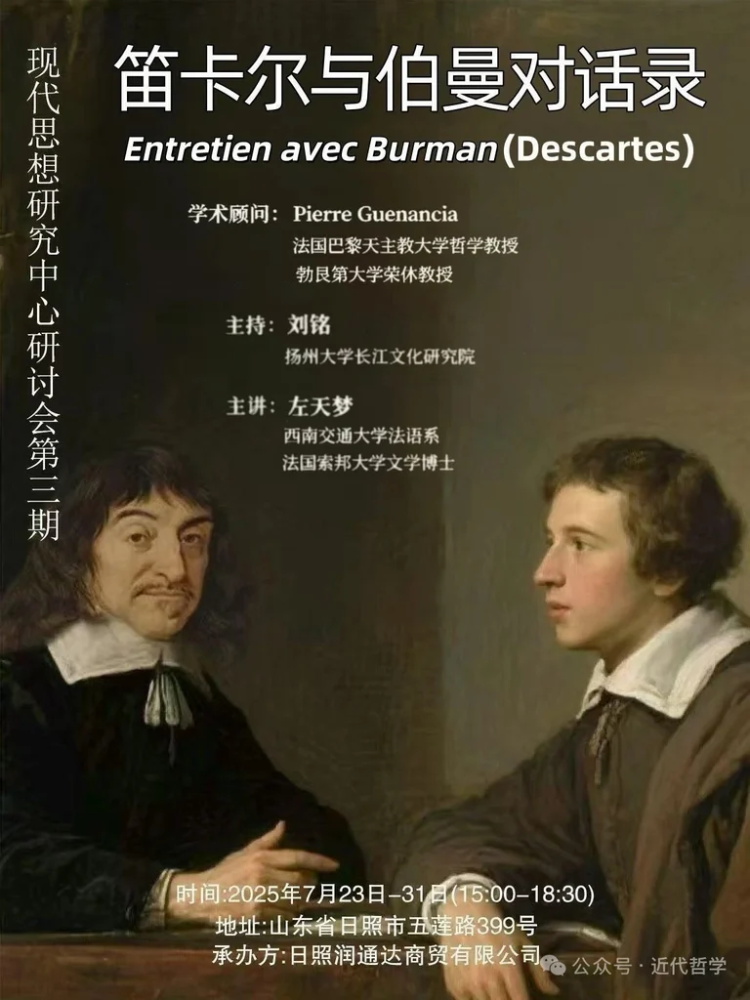
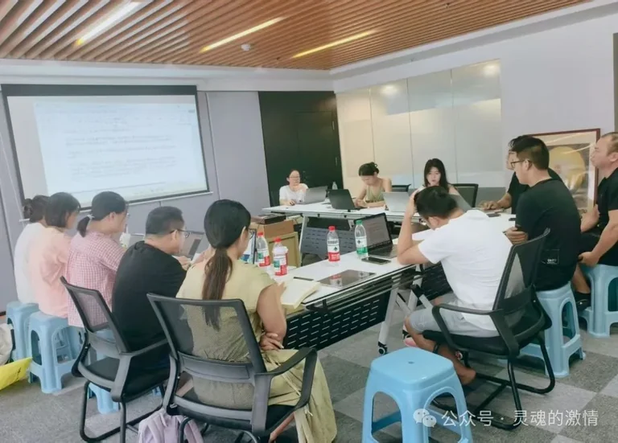

活动概述
2025 年 7 月 23 日至 29 日，现代思想研究中心组织开展第三期读书会活动，聚焦《笛卡尔与伯曼对话录》（Entretien avec Burman）。本次活动由扬州大学长江文化研究院刘铭主持，西南交通大学外国语学院法俄系主任、讲师左天梦主讲，汇聚了来自约克大学、同济大学、南昌大学、扬州大学、西南交通大学与西北师范大学等高校的 12 位师生。
与一般讲座不同，这场读书会采取逐段校读的方式推进，重点不在“讲完一本书”，而在通过细读进入笛卡尔思想运作的现场。
文本价值与阅读重点
纪要将《笛卡尔与伯曼对话录》定义为一部形式特殊、内容密度很高的对话体文本。它记录了 1648 年 4 月 16 日，青年神学生伯曼带着七十余处文本选段与八十多个具体问题拜访笛卡尔时所展开的一次长谈，问题涉及“我思故我在”的论证逻辑、意志与理解的关系、观念的先天性、心灵活动与概念形成等多个核心议题。
纪要特别强调，这部《对话录》成文于笛卡尔去世前不到两年，因此几乎构成理解其晚期哲学立场的最后一批重要材料。读书会的价值，也正在于通过逐条校读和集中讨论，让参与者直接进入笛卡尔概念运作的细部，而不是停留在二手概述层面。
读书会方法与学术收获
按照纪要描述，本次读书会坚持“每读几句就停下来讨论语义与逻辑”的方式，从而把文本阅读、翻译校对、哲学解释与历史背景分析合并到同一个现场中。参与者不仅讨论文本版本与翻译问题，也在概念、论证与术语使用层面不断交叉核对。
这种方法使活动呈现出很强的文献性与理论密度，也呼应了中心一贯强调的原典精读与跨学科对话路径。纪要最后明确指出，系列读书会的目标并不是快速输出观点，而是通过共读形成一个严谨而开放的思想共同体。
参与者反馈
纪要收录了多位参与者的感受。滕光伟强调，伯曼既是学生也是质问者，这使他重新理解了哲学阅读的方式：不是只“理解一个观点”，而是进入一种思维风格的训练。许宇璐则把自己的关切落在“哲学的非哲学条件”上，指出 17 世纪哲学仍需要回应神学与朴素信仰的外部条件。袁昊达则从校读标准、多语种训练与学术规范的角度，强调了这次读书会的具体训练价值。
这些反馈使读书会详情页不只是一份纪要摘要，也保留了活动作为学术共同体现场经验的一面。
活动照片

